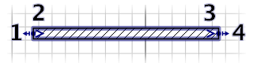
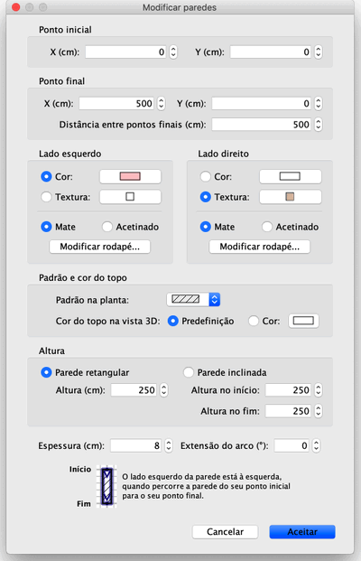

| Editar paredes | |||
Pode editar a localização e o comprimento das paredes da casa, com o rato ou escolhendo Planta > Modificar paredes.... Quando uma parede está seleccionada na planta, pode também mover os seus pontos inicial e final, com o indicador de tamanho que aparece em cada ponta da parede seleccionada.  |
|
Quando o ponteiro do rato está no ponto inicial ou final da parede seleccionada, altera a sua forma para indicar que pode
arrastar e largar esse ponto para o mover. Enquanto pressionar o botão do rato, dispõe de uma caixa que lhe mostra o
comprimento da parede. Uma parede também pode ser editada na sua janela, que surge fazendo duplo clique na parede ou escolhendo Planta > Modificar paredes... depois de a seleccionar na planta.  Na janela de edição de paredes, pode alterar as coordenadas dos seus pontos inicial e final, as cores, textura e
brilho dos seus lados direito e esquerdo, o padrão usado para o preenchimento na planta, a cor usada para pintar o seu topo na
vista 3D, a sua espessura, a sua altura e a extensão do seu arco se for uma parede redonda. Também pode adicionar
(ou remover) rodapés no fundo de cada lado, clicando nos botões Modificar rodapé. |
|